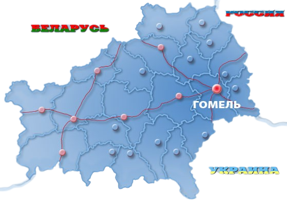

 Гомельская область – крупнейшая по территории область Беларуси (40,4 тыс.кв. км). Расположена в юго-восточной части страны, граничит с Брянской областью России, а также с Киевской, Черниговской, Житомирской и Ровненской областями Украины. Сельскохозяйственные угодья занимают 30% территории региона. Население более 1, 3 млн человек. Основная религия – православие. Гомель – областной административный центр. Территория области разделена на 21 район. В состав области входят 18 городов, 15 поселков городского типа, 2255 сельских населенных пунктов. Гомельская область имеет развитую дорожную инфраструктуру и обширную сеть железных дорог. Главная река области – Днепр. Она пересекает территорию региона с севера на юг протяженностью – 420 км. Притоки Днепра и реки Припяти имеют судоходное и сплавное значение, а также служат водоприемниками для мелиоративных каналов, осушающих заболоченные земли. На территории Гомельской области обширная сеть каналов. Кроме того, здесь много озер. Самое большое из них – Червоное (площадь 43,6 кв. км). В Гомеле и Мозыре расположены аэропорты. Гомельская область является одним из высокоразвитых индустриальных регионов Беларуси. На его территории расположено около 300 крупных и средних предприятий Основной промышленный потенциал сосредоточен в городах Гомель, Мозырь, Жлобин, Светлогорск, Речица, Добруш. Среди полезных ископаемых – топливно-энергетическое сырье. Разведано около 1500 месторождений торфа. Половина территории области покрыта лесами. По запасам леса Гомельская область занимает первое место в Беларуси. В юго-восточной части Припятской впадины разведаны залежи каменного угля. В Ельском районе обнаружено месторождение горючих сланцев. В 100 млн. тонн оцениваются запасы бурых углей, сосредоточенных в Житковичском и Бриневском месторождениях. Разведанные запасы каменной соли превышают 22 млрд. тонн. На базе Мозырского месторождения создано крупнейшее в республике производство по выпуску соли (ОАО «Мозырьсоль»). На Гомельщине функционирует Полесский радиационно-экологический заповедник – единственный такого типа в мире – в котором изучаются и сохраняются в естественном состоянии территории, подвергшиеся радиоктивному воздействию после аварии на Чернобыльской АЭС.